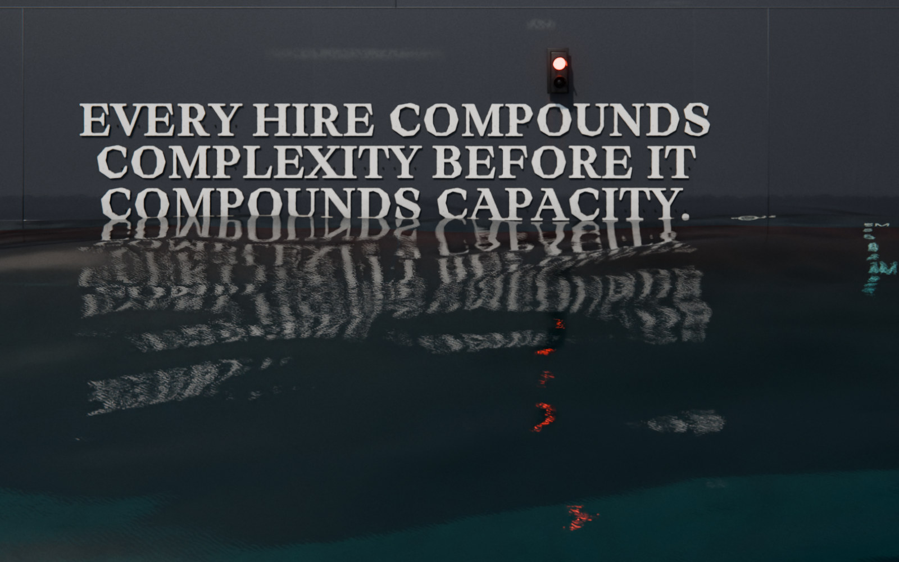

Scaling Up‑Side‑Down
The book
SUSD Bootloader
Get it free
Graveyard 15–39
The Bootloader asks How many people are on your team?
13people
78coordination pathways (+12)
Threshold 13–14
At 13-14 employees, next hire is a phase change, not incremental growth.
The Bootloader starts with three questions
Where am I now?
Where does my vehicle top out?
your vehicle: bicycle, car, limousine or airplane
Where do I actually want to be?
Past twelve, something breaks.